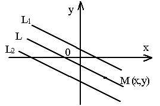

П 7. №6.
Составьте уравнение прямой  ,
параллельной прямым и и проходящей посередине между ними.
,
параллельной прямым и и проходящей посередине между ними.
,
параллельной прямым и и проходящей посередине между ними.
Решение:
1-ый способ.
Уравнение прямой будем
искать в виде  .
.
будем
искать в виде .В качестве нормального вектора  можно
выбрать нормальный вектор прямых
можно
выбрать нормальный вектор прямых  и , равный
и , равный
можно
выбрать нормальный вектор прямых и , равный Найдем какую-нибудь точку .
Точка  будет
делить пополам отрезок, соединяющий две любые точки, лежащие на и .
будет
делить пополам отрезок, соединяющий две любые точки, лежащие на и .
будет
делить пополам отрезок, соединяющий две любые точки, лежащие на и .
Например, и , тогда точка имеет координаты , и уравнение прямой принимает вид: .
имеет координаты , и уравнение прямой принимает вид: .2 –ой способ.
Произвольная точка , если ,
Для снятия модуля определим знаки отклонений точки от прямых и .
Для этого нужно выяснить взаимное расположение начала координат, точки и прямых и
.
и .
Для этого нужно выяснить взаимное расположение начала координат, точки и прямых и
.Приведем уравнения прямых к нормальному виду:
где - единичные
векторы нормалей к прямым и , проведенным из начала координат.
и , проведенным из начала координат.Видим, что противоположны
по направлению, значит, начало координат лежит в полосе между прямыми и .
Точка  и начало координат лежат
по одну сторону как от прямой , так и
от прямой , значит, отклонения точки от прямых и имеют
один и тот же отрицательный знак.
и начало координат лежат
по одну сторону как от прямой , так и
от прямой , значит, отклонения точки от прямых и имеют
один и тот же отрицательный знак.
и .
Точка и начало координат лежат
по одну сторону как от прямой , так и
от прямой , значит, отклонения точки от прямых и имеют
один и тот же отрицательный знак. Из следует, что и .
Ответ: